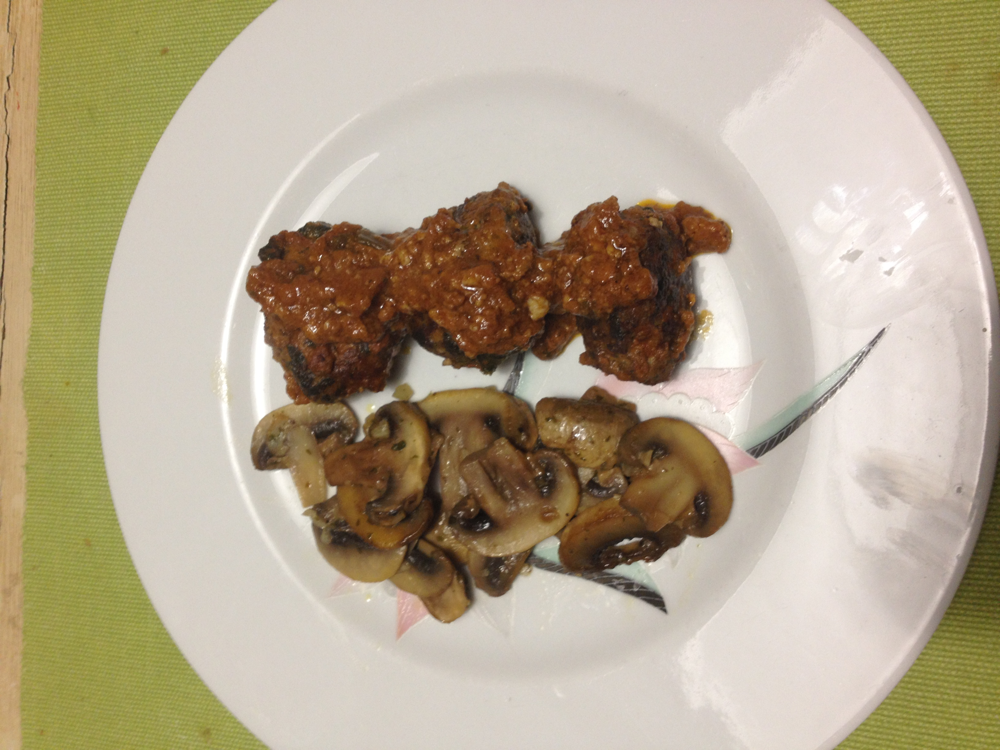
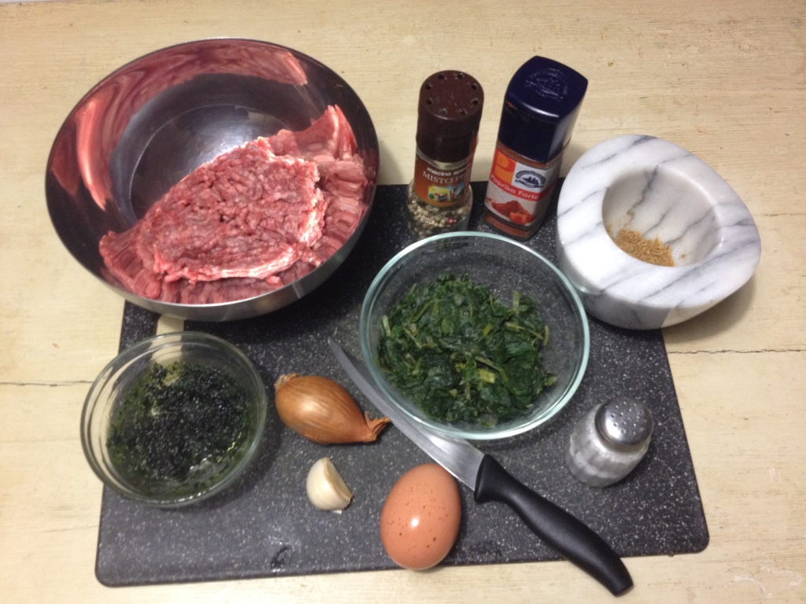
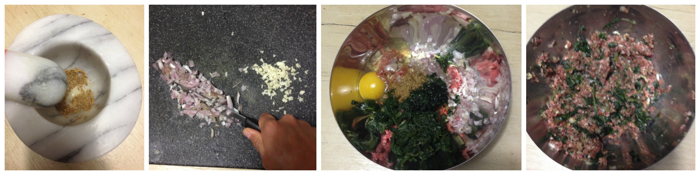
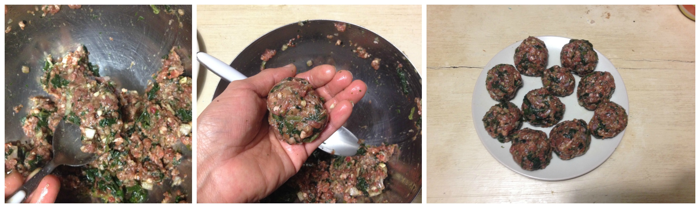
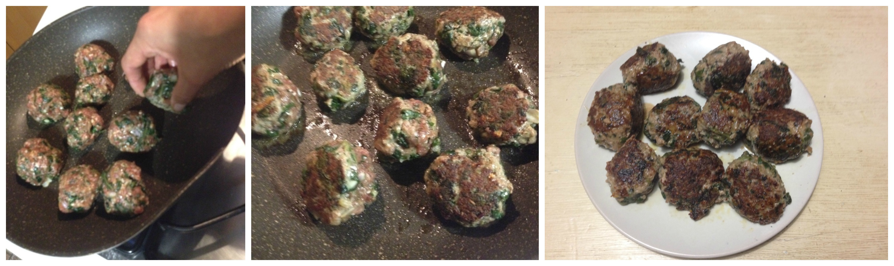
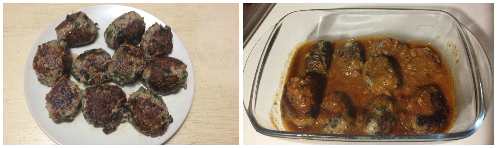

Tasty spinach and coriander meatballs¶
Spinach and coriander meatballs served with sauté champignons
- Serves: 2
- Type: main
In this occasion I will introduce to you this tasty and different recipe for meatballs, I had to say that the idea to put coriander into meatballs was intriguing, the result was more than expected. I decided to test two different versions.
Ingredients¶
Ingredients
Version 1:
- 400 grams minced beef meat
- 1 scallion
- 1 teaspoon just ground cumin powder
- 1 1/2 cup steamed cooked spinach
- 1 egg
- 1-2 garlic cloves
- Oil
- Salt and pepper to taste
Version 2: all the ingredients above plus 150 grams bolognese sauce
Steps¶
Version 1 & 2
Grind the cumin seeds
Chop the scallion and the garlic clove
Put all the ingredients in a bowl and mix
Preparing the meatballs
Take a tablespoon of the mix and shape it rounded. Set aside.
Shaping the meatballs
Version 1: Heat a bit of oil and fry (with medium heat) the meatballs for all sides for a least 10 minutes. Remove the extra oil and serve.
Version 1: Fry the meatballs
Version 2: Preheat the oven at 180°C, Heat a bit of oil and brown the meatballs for all the side. In a baking tin pour the bolognese sauce add the meatballs. Bake it for 15 minutes.
Version 2: Bake the meatballs
Can be served with¶
- steamed brocoli
- green beans
- salad (in the version 1 case)
- Sauté champignons